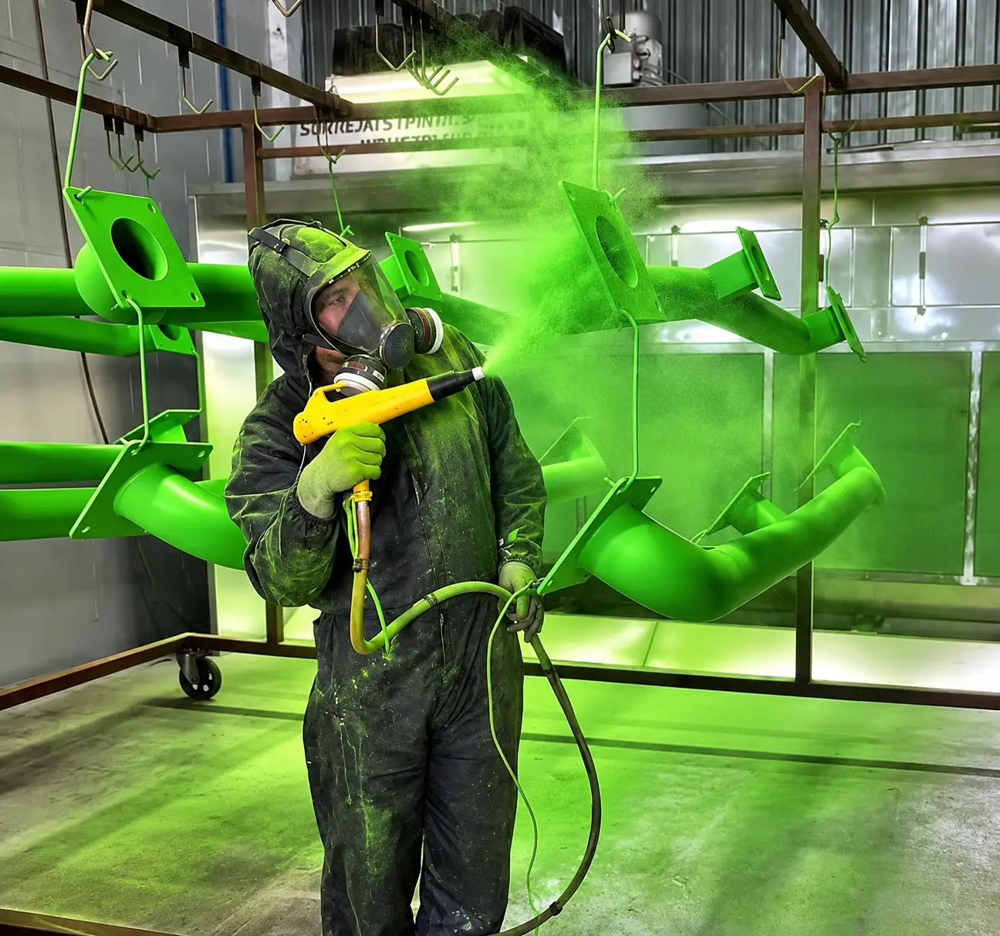

Preguntas frecuentes.
Resolvemos algunas dudas sobre nuestros materiales, acabados, tiempos de entrega y cotizaciones.

¿Qué es la pintura electrostática?
Es un recubrimiento en polvo que se aplica sobre una superficie previamente preparada, generalmente mediante un equipo que carga eléctricamente las partículas. Posteriormente, la pieza pasa por un proceso de curado mediante calor para obtener el acabado final.
¿Qué ventajas tiene frente a la pintura líquida?
La pintura en polvo puede ofrecer buena uniformidad, resistencia y diferentes opciones de apariencia. Además, numerosos sistemas de pintura en polvo reducen el uso de solventes durante la aplicación. Su desempeño depende de la formulación, la preparación de la superficie y las condiciones de curado.
¿Qué piezas podemos pintar?
Trabajamos con diferentes tipos de componentes metálicos, como gabinetes, estructuras, soportes, perfiles, cubiertas, rejillas, paneles y piezas de maquinaria. La aceptación depende de sus dimensiones, material y características técnicas.
¿Qué materiales pueden recibir este recubrimiento?
Entre los materiales que podemos evaluar se encuentran el acero al carbón, aluminio, latón y algunas aleaciones de cobre. Cada pieza debe revisarse para determinar las condiciones adecuadas de preparación y recubrimiento.
¿Se pueden pintar piezas usadas u oxidadas?
Depende de las condiciones de la superficie. Algunas piezas requieren limpieza, eliminación de contaminantes o tratamientos adicionales antes de aplicar la pintura. Es recomendable enviar fotografías para evaluar el trabajo.
¿Qué colores y acabados están disponibles?
Existen diferentes opciones de colores, brillos y texturas, sujetas a disponibilidad del producto y a los requisitos del proyecto. Podemos revisar alternativas para aplicaciones específicas.
¿La pintura electrostática sirve para exteriores?
Sí, siempre que se seleccione un sistema de recubrimiento apropiado para las condiciones de exposición. La formulación, el ambiente y la preparación de la superficie influyen en su desempeño.
¿Puedo solicitar solamente una pieza?
Sí. Tuled atiende proyectos desde una pieza hasta lotes de producción, considerando las características del trabajo y la disponibilidad operativa.
¿Tienen servicio Express?
Contamos con opciones de atención prioritaria para determinados trabajos. Las entregas en menos de 24 horas están sujetas a disponibilidad, cantidad de piezas y condiciones del proyecto.
¿Cuánto cuesta pintar una pieza?
El precio depende del material, dimensiones, cantidad, preparación requerida, geometría, color y acabado solicitado. Para ofrecer una cotización es necesario conocer las características de la pieza.
¿Qué necesito enviar para solicitar una cotización?
Recomendamos compartir fotografías, medidas aproximadas, cantidad, material, color requerido y fecha de entrega deseada.
¿Cómo se revisa la calidad del recubrimiento?
La revisión puede incluir condiciones de apariencia, cobertura y requisitos específicos acordados con el cliente. Las pruebas técnicas se realizan cuando corresponden al servicio y a los procedimientos disponibles.
¿Por qué elegir Tuled?
Contamos con experiencia desde 2003 en la aplicación de pintura electrostática, atención a diferentes volúmenes de producción y opciones de servicio adaptadas a las necesidades de nuestros clientes.
¿Tienes una pieza especial o alguna otra duda?
Compártenos fotografías, medidas y el acabado que necesitas.
Consultar por WhatsApp